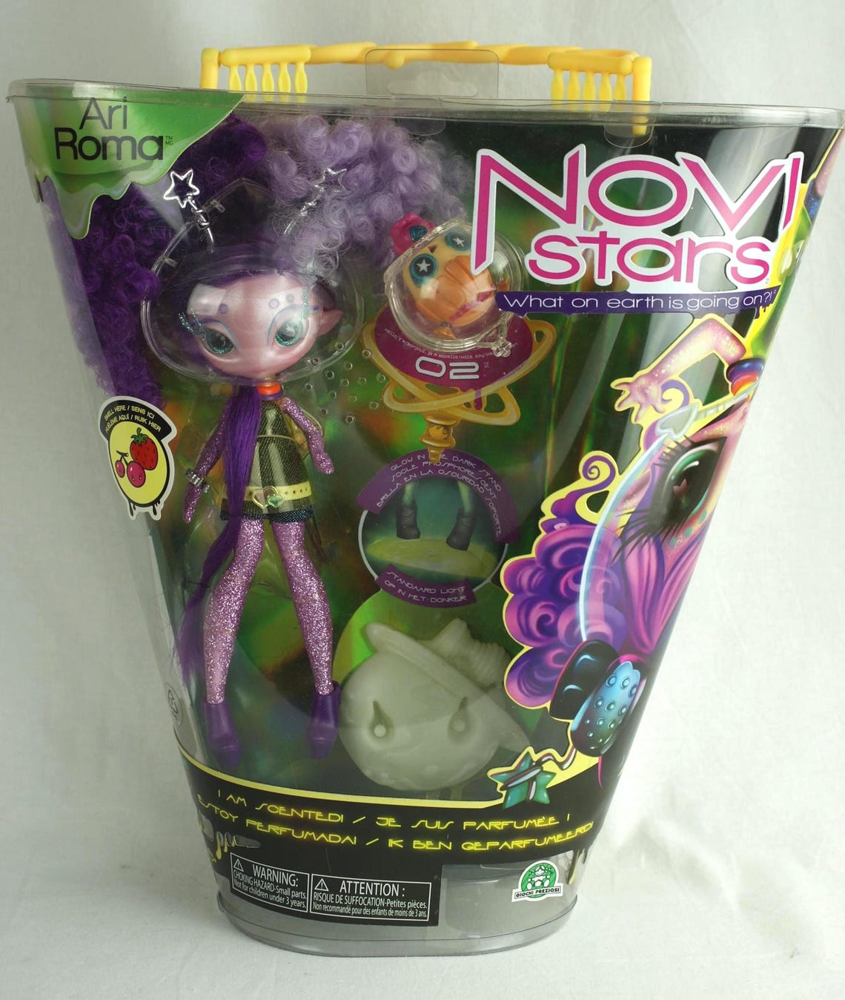
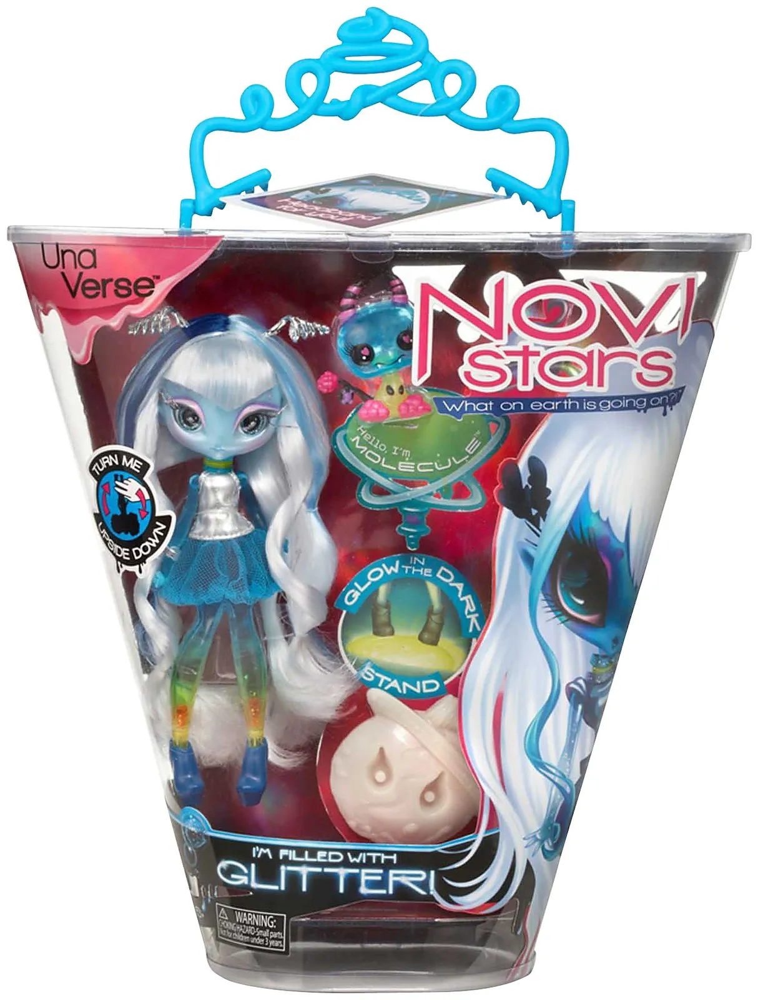
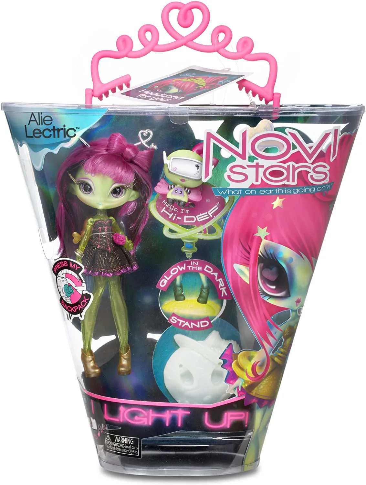
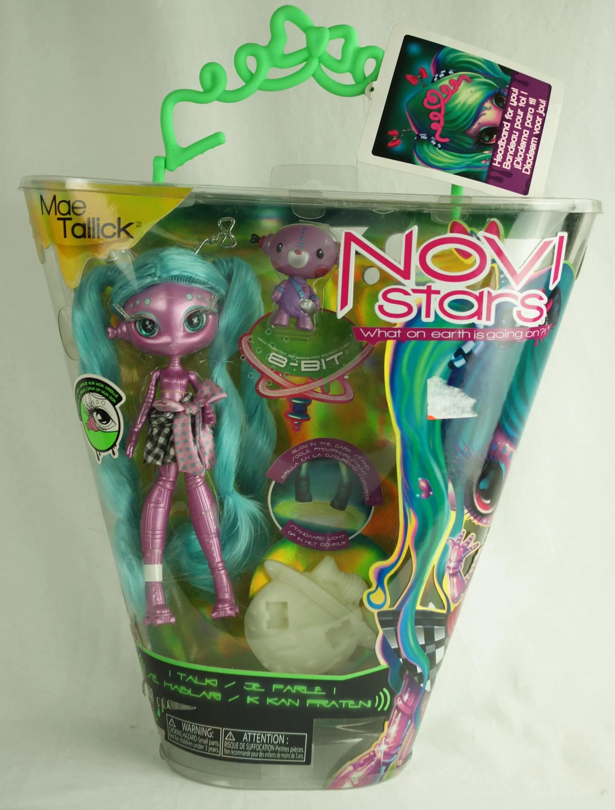
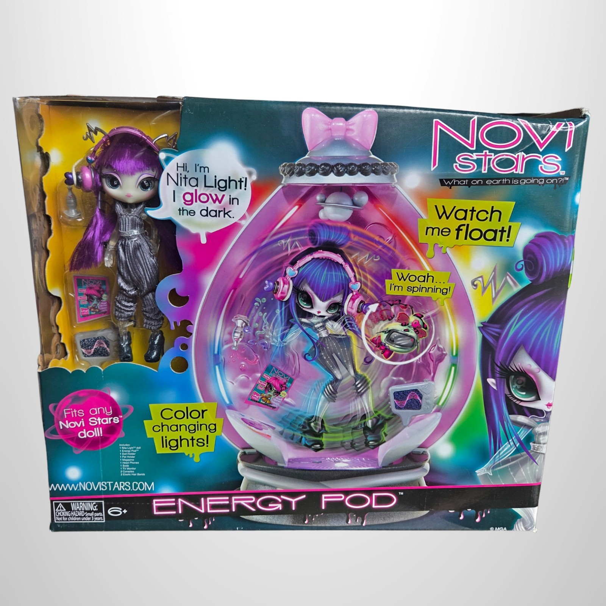
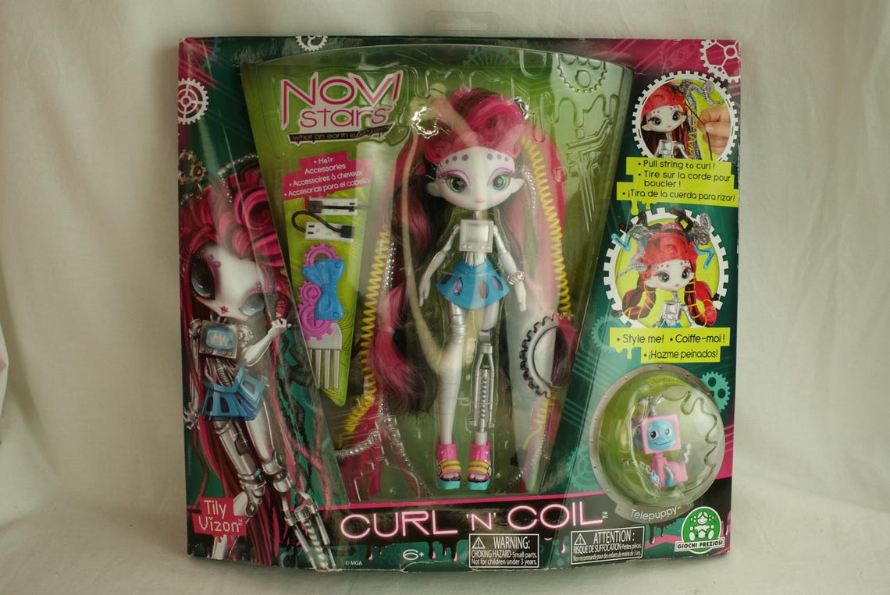

Novi Stars was released by MGA Entertainment during the hype that Monster High generated. This line stars aliens landing on Earth and engaging in human life to observe and study them. This line has had a recent explosion in popularity.
Due to Mae Tallick's voice gimmick. Community members have foudn that MGA has renewed the copyright but outside of that, we don't know what they have planned for this line.
Signature release Wave 1 confirmed to be sold here.




Nita Light Playset confirmed to be sold here.

Fashion Packs needs to be confirmed.
Secret Pets needs to be confirmed.
Signature release Wave 2 confirmed to be sold here.
Orbit Beach Dolls needs to be confirmed.
Super Novas Wave 1 Dolls needs to be confirmed.
Invasion Wave 1 Dolls needs to be confirmed.
Stellar Skins confirmed to be sold here exclusively at Big W.
Curl n' Coil Dolls needs to be confirmed.

Super Novas Wave 2 Dolls probably not sold here.
Invasion Wave 2 Dolls probably not sold here.
Styling Heads confirmed to be sold here in very limited quantities.
We thank Tess Fabled for her contributions.